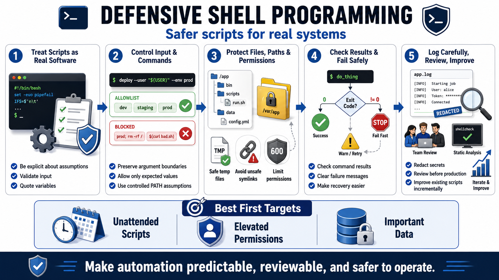

Course Summary: Defensive Shell Programming Habits
Connecting to LMS... Progress: in progress

Narration
Defensive shell programming is a set of habits rather than one feature. Treat scripts as real software when they affect real systems. Quote variables to preserve argument boundaries. Validate input before using it. Check command results. Fail safely. Protect files, paths, permissions, and secrets. Log carefully. Review scripts before production use.
These habits make automation trustworthy enough to run in real environments. They do not require every script to become a large framework. They require the author to be explicit about assumptions: what input is allowed, where files live, which commands should run, what permissions are needed, and what happens when something fails.
Existing scripts can improve incrementally. Start with the scripts that run with meaningful permissions or touch important data. Add quoting, input validation, precondition checks, safer temporary-file handling, controlled PATH assumptions, redacted logs, and clear failure messages. Then add review and static analysis so the improvements remain part of the workflow.
The professional goal is not to avoid shell scripting. The goal is to make shell automation predictable, reviewable, and safer to operate. A defensive script helps the team move faster because operators can understand it, maintainers can review it, and failures are less likely to become surprises.
As you return to existing automation, look for the scripts that run unattended, run with elevated permissions, or handle important data. Those are the best first candidates for defensive cleanup because a small improvement in a widely used script can reduce real operational risk. Treat each change as a chance to make the script easier to run, easier to review, and easier to recover from when conditions change.